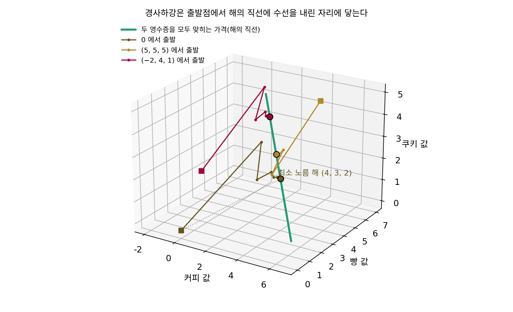

암묵적 편향: 옵티마이저가 고르는 해
이 장의 물음
손글씨 숫자를 분류하는 작은 신경망을 학습시켜 본 사람은, 학습 데이터의 정확도가 100%에 닿고 학습 손실이 거의 0으로 내려가는 것을 본 적이 있을 것이다. 학교에서 배운 통계라면 여기서 걱정해야 한다. 파라미터(학습으로 고치는 숫자들)가 데이터보다 훨씬 많고 학습 데이터를 하나도 틀리지 않게 외웠다면, 처음 보는 데이터에서는 엉망이어야 할 것 같다. 그런데 실제로는 시험 데이터에서도 잘 맞는 일이 흔하다.
2016년 말, 장치위안(Chiyuan Zhang), 사미 벤지오(Samy Bengio), 모리츠 하르트(Moritz Hardt), 벤저민 레흐트(Benjamin Recht), 오리올 비냘스(Oriol Vinyals)는 이 걱정을 실험으로 밀어붙였다. 이미지 분류 데이터 CIFAR-10의 정답 꼬리표를 모두 무작위로 바꿔 놓고, 평소 쓰는 합성곱 신경망을 평소처럼 확률적 경사하강으로 학습시킨 것이다. 신경망은 아무 규칙도 없는 꼬리표까지 학습 오차 0으로 외웠고, 걸린 시간도 진짜 꼬리표일 때보다 작은 상수배 정도만 더 걸렸다. 가중치 감쇠나 드롭아웃 같은 명시적인 정규화를 켜도 무작위 꼬리표를 외우는 결과는 크게 달라지지 않았다. 이 실험을 담은 논문 「딥러닝을 이해하려면 일반화를 다시 생각해야 한다(Understanding deep learning requires rethinking generalization)」는 2017년 국제 표현 학습 학회(ICLR)에 실렸다.
이 실험이 남긴 수수께끼는 이렇다. 같은 신경망, 같은 옵티마이저가 무작위 꼬리표는 외우기만 하고, 진짜 꼬리표에서는 처음 보는 그림에도 통하는 규칙을 찾는다. 신경망이 무엇이든 외울 수 있다면, 학습 손실을 0으로 만드는 파라미터는 수없이 많다는 뜻이다. 그 가운데 어느 것에 닿을지는 손실이 정하지 않는다. 그렇다면 그 선택은 누가 하는가?
이 장은 다음 물음에 차례로 답한다.
- 방정식보다 미지수가 많아 해가 끝없이 많을 때, 경사하강은 그 가운데 어느 해에 닿을까? 출발점을 바꾸면 도착점도 바뀔까?
- 라벨이 다른 두 부류의 점을 가르는 직선이 여럿일 때, 로지스틱 회귀를 오래 학습하면 어느 직선으로 갈까? 옵티마이저를 바꾸면 그 직선도 바뀔까?
- 학습을 일찍 멈추는 것이 왜 정규화를 건 것과 비슷한 결과를 낼까?
- 손실이 0인 골짜기가 여럿일 때, 미니배치의 노이즈는 좁은 골짜기와 넓은 골짜기 가운데 어느 쪽으로 데려갈까? 넓은 골짜기가 정말 더 좋은 해일까?
최소 노름 해: 0에서 출발한 경사하강이 고르는 해
학습 손실을 0으로 만드는 파라미터가 수없이 많다는 것이 어떤 뜻인지, 가장 작은 경우로 손에 잡아 보자. 미지수보다 방정식이 적으면 해가 하나로 정해지지 않는다. 이런 문제를 경사하강으로 풀면 손실은 0으로 내려가지만, 어느 해에서 멈출지는 손실이 말해 주지 않는다. 경사하강은 아무 해에나 멈출까, 아니면 어떤 규칙을 따라 한 해를 고를까?
역사: 해가 많을 때 하나를 고르는 규칙
해가 하나로 정해지지 않는 연립방정식에서 「가장 짧은 해」를 고르는 규칙은 수학에 오래전부터 있었다. 미국의 수학자 일라이어킴 헤이스팅스 무어(E. H. Moore)는 1920년에 정사각이 아닌 행렬에도 역행렬 비슷한 것을 정의했지만, 표기가 낯설어 그 뒤 30년 가까이 이어받는 사람이 거의 없었다. 1951년 스웨덴의 측지학자 아르네 비에르하마르(Arne Bjerhammar)가, 1955년 영국의 수학자 로저 펜로즈(Roger Penrose)가 같은 것을 따로 다시 찾았다. 펜로즈는 「행렬의 일반화된 역(A generalized inverse for matrices)」에서 이 행렬을 네 개의 대수 조건으로 정의했다. 지금 이 행렬을 무어–펜로즈 의사역행렬(pseudoinverse, 넘파이의 np.linalg.pinv)이라 부른다. 방정식 Xw = y의 해가 여럿일 때 의사역행렬이 내놓는 해는 그 가운데 길이가 가장 짧은 해다.
이 규칙은 계산하는 사람이 일부러 고르는 규칙이었는데, 2017년의 장치위안과 동료들은 같은 논문에서 거꾸로 물었다. 아무도 고르라고 시키지 않았는데, 경사하강이 저절로 이 규칙을 따르고 있지는 않을까?
영수증 두 장, 메뉴 셋
답을 미리 아는 가장 작은 문제로 시작하자. 미지수가 둘이고 방정식이 하나인 문제는 해가 직선이라 그림으로는 좋지만, 해의 직선과 원점이 한 평면에 다 보여서 「어느 해를 골랐는가」의 차이가 덜 드러난다. 미지수 셋, 방정식 둘이면 해는 3차원 공간의 직선이 되고, 출발점마다 다른 해에 닿는 모습을 숫자로 견줄 수 있다.
카페 영수증이 두 장 있다. 한 장에는 커피 1잔과 빵 1개에 7천 원, 다른 한 장에는 커피 1잔과 쿠키 2개에 8천 원이 찍혀 있다. 커피 값, 빵 값, 쿠키 값을 묶은 가격 벡터를 w라 하고, 영수증마다 메뉴별 개수를 한 줄로 적은 것을 x₁ = (1, 1, 0), x₂ = (1, 0, 2), 낸 돈을 y = (7, 8)이라 하자. 두 영수증을 모두 맞히는 가격은 하나가 아니다. (7, 0, 0.5)도, (3, 4, 2.5)도, (4, 3, 2)도 두 영수증을 정확히 맞힌다. 세 해의 길이(유클리드 노름, 성분 제곱합의 제곱근)는 각각 7.0178, 5.5902, 5.3852다.
영수증 금액과의 차이를 제곱해 평균 낸 것의 절반을 손실로 두고, 모든 가격을 0에서 출발시켜 학습률 η(에타) = 0.5로 경사하강을 해 보자(이 문제의 학습률 상한은 2/2.6514 = 0.7543이다).
| 스텝 k | 커피 | 빵 | 쿠키 |
|---|---|---|---|
| 0 | 0.0000 | 0.0000 | 0.0000 |
| 1 | 3.7500 | 1.7500 | 4.0000 |
| 2 | 3.1875 | 2.1250 | 2.1250 |
| 5 | 3.8994 | 2.8457 | 2.1074 |
| 10 | 3.9931 | 2.9901 | 2.0059 |
| 20 | 4.0000 | 3.0000 | 2.0000 |
11번째 스텝에서 (4, 3, 2)의 0.01 안쪽에 들고, 스무 스텝이면 네 자리까지 (4, 3, 2)로, 세 해 가운데 가장 짧은 해이자 의사역행렬로 계산한 해와 정확히 같은 해다. 출발점을 바꾸면 어떻게 될지 보려고 같은 학습률로 3000스텝씩 돌렸다.
| 출발점 | 도착점 | 도착점의 노름 |
|---|---|---|
| (0, 0, 0) | (4.0000, 3.0000, 2.0000) | 5.3852 |
| (0, 0, 3) | (3.3333, 3.6667, 2.3333) | 5.4772 |
| (5, 5, 5) | (2.8889, 4.1111, 2.5556) | 5.6372 |
| (−2, 4, 1) | (1.1111, 5.8889, 3.4444) | 6.9121 |
모두 두 영수증을 맞히는 해에 닿았지만, 닿은 자리가 저마다 다르다. 손실은 네 경우 모두 0이므로 손실만 보아서는 어느 것이 나은지 가릴 수 없는데, 도착점을 정한 것은 출발점이다.
출발점이 도착점을 정하는 것은 손실의 그래디언트가 다음과 같은 모양이기 때문이다.
둘째 꼴을 보면, 그래디언트는 언제나 영수증 줄 x₁, x₂를 섞은 것이다. 어떤 수를 곱해 섞든 두 줄 모두와 수직인 방향 u = (2, −2, −1)/3의 성분은 없다. u 방향으로 가격을 옮기면 두 영수증의 금액이 하나도 바뀌지 않는다(커피를 2만큼 올리고 빵을 2, 쿠키를 1만큼 내리면 두 영수증 모두 그대로다). 경사하강은 이 방향으로는 한 번도 움직이지 않으므로, 출발점이 가진 u 성분이 끝까지 그대로 남는다. 0에서 출발하면 그 성분이 0이고, 두 영수증을 맞히면서 u 성분이 0인 해는 하나뿐이고, 그 해가 가장 짧은 해다. 해의 직선 위에서 원점에 가장 가까운 점은 원점에서 직선에 내린 수선의 발이고, 그 점에서는 직선 방향 u 성분이 0이기 때문이다.
(5, 5, 5)는 u 성분이 −1.6667이고, 실제로 (4, 3, 2) − 1.6667 × (2, −2, −1)/3 = (2.8889, 4.1111, 2.5556)에 닿았다. 해가 여럿일 때 0에서 출발한 경사하강이 닿는 가장 짧은 해를 최소 노름 해 (가장 짧은 해 / minimum-norm solution)라 한다. 아무도 「짧은 해를 골라라」고 손실에 적어 넣지 않았는데 경사하강이 그 해를 고른다. 이렇게 손실에는 적히지 않았지만 옵티마이저의 움직임이 특정한 해를 고르게 만드는 성질을 암묵적 편향(implicit bias)이라 부르며, 이 장 전체가 그 성질을 다룬다.

ML에서: 0에서 출발한 선형 모델은 커널 방법과 같다
장치위안과 동료들은 무작위 꼬리표 실험을 보고한 같은 논문의 뒷부분에서, 선형 모델을 0에서 출발시켜 확률적 경사하강으로 학습하면 파라미터가 늘 데이터 점들을 섞은 꼴 w = Σαᵢxᵢ로 남는다는 것을 지적했다. 영수증 계산에서처럼 그래디언트가 늘 데이터 점들을 섞은 꼴이기 때문이다. 학습 데이터를 모두 맞히는 해 가운데 이 꼴인 것은 하나뿐이고, 그것이 최소 노름 해다. 그들은 이 해를 직접 계산했다. 전처리 없는 MNIST(손글씨 숫자 6만 장)에서 데이터 점끼리의 내적을 모은 6만 × 6만 행렬(저장에 30GB가 든다)로 연립방정식을 풀자, 정규화 없이도 시험 오차가 1.2%였다. 이미지를 가보르 웨이블릿으로 먼저 바꾸면 0.6%로 줄었다.
그러나 그들은 「노름이 작을수록 일반화가 잘 된다」로 끝내지 않았다. 웨이블릿을 거친 해는 노름이 약 220에서 390으로 커졌는데도 시험 오차는 반으로 줄었다. 최소 노름은 옵티마이저가 어느 해를 고르는지는 말해 주지만, 서로 다른 입력 표현끼리 견줄 때 일반화를 미리 알려 주는 잣대는 아니었다. 그들은 이것을 일반화 이야기의 「아주 작은 조각」이라고 적었다.
문제 1. 동아리 예산을 가장 적게 고치기
동아리의 간식비, 인쇄비, 교통비가 지금 각각 10만 원씩인데, 학생회가 「세 항목의 합을 36만 원으로 맞추라」는 조건 하나만 걸었다. (가) 세 항목을 모두 합쳐 가장 적게 고치려면(고친 양의 제곱합이 가장 작게) 어떻게 나눠야 하는가? (나) 지금 예산이 (20, 6, 4)만 원이었다면? (다) 아직 예산이 하나도 없어서 (0, 0, 0)에서 정한다면?

간식비만 6만 원 올려서 (16, 10, 10)으로 하면 끝이에요. 한 항목만 고쳤으니까 제일 적게 고친 거죠.

「고친 양의 제곱합」으로 재면 얼마죠? 세 항목을 2만 원씩 올린 것과 견줘 봐요.

간식비만 올리면 6² = 36, 길이로 6이에요. 2만 원씩 셋을 올리면 2² × 3 = 12, 길이로 3.4641이에요. 고친 항목 수는 많아도 고친 크기는 반쯤이네요.

(나)도 똑같이 셋을 2만 원씩 올리면 돼. (22, 8, 6), 고친 크기도 3.4641로 같아. 조건이 「합」이라서, 합을 바꾸지 않는 방향은 건드릴 이유가 없어. (다)는 0에서 시작하니까 (12, 12, 12)야.

지금 예산에서 출발해 「합과 36의 차이」를 손실로 두고 경사하강을 해도 같은 답이 나올까요?
손실 ½(합 − 36)²의 그래디언트를 구해 볼게요. 항목마다 미분하면 다 (합 − 36)이라… (합 − 36) × (1, 1, 1)이에요.
그러면 한 스텝에 세 항목은 어떻게 움직이죠?

늘 같은 양씩만이요. 그럼 (20, 6, 4)에서 출발하면 (22, 8, 6), (10, 10, 10)에서 출발하면 (12, 12, 12)에 닿겠네요. 가장 적게 고친 안과 같아요.
출발점이 다르니까 도착점도 다르네.
영수증 문제에서도 그랬잖아. 경사하강은 출발점에서 가장 가까운 해에 닿아.

조별 보고서 분량을 맞추라고 할 때 한 사람 파트만 몽땅 자르면 그 사람만 다시 써야 하는데, 다들 조금씩 줄이면 전체로는 덜 고치는 거랑 같네요.
문제 2. 빵을 두 개 묶음으로 적으면
영수증이 한 장뿐이다. 「커피 1잔 + 빵 2개 = 5천 원」. (가) 커피 값 w₁과 빵 한 개 값 w₂를 0에서 출발시켜 경사하강으로 맞히면 어디에 닿는가? (나) 같은 영수증을 「커피 1잔 + 빵 1묶음(2개)」으로 적고, 커피 값과 묶음 값을 0에서 출발시켜 맞힌다. 닿은 묶음 값을 빵 한 개 값으로 바꾸면 (가)와 같은가? (풀어 본 뒤 위젯 1의 「문제 2 불러오기」로 확인해 보자.)
(가)는 최소 노름 해죠. 직선 w₁ + 2w₂ = 5에서 원점에 가장 가까운 점은 영수증 줄 (1, 2) 방향에 있으니까 (1, 2)예요. (나)는 같은 영수증을 적는 법만 바꾼 거니까 답도 같겠죠.
(나)에서 파라미터는 무엇이고, 그 파라미터로 적은 영수증 줄은 무엇이죠?

커피 값과 묶음 값이고, 줄은 (1, 1)이에요. 그러면 최소 노름 해가 (2.5, 2.5)니까… 빵 한 개는 1.25천 원이에요. (가)는 커피 1, 빵 2였는데, 이번엔 커피 2.5, 빵 1.25예요. 영수증은 둘 다 맞혀요.
경사하강은 파라미터 공간에서 가장 짧은 해를 골라. 빵 값을 두 배 단위로 적으면 그 방향의 길이를 재는 눈금이 바뀌니까, 「가장 짧은」이 가리키는 해도 바뀌는 거야.

그래요. 최소 노름은 「어떤 숫자를 파라미터로 삼았는가」에 따라 달라지는 규칙이에요. 그러면 입력 특징의 단위를 바꾸거나, 특징 하나를 두 번 복사해 넣는 것도 최소 노름 해를 바꿀까요?

특징을 두 번 넣으면 그 특징의 가중치가 둘로 나뉘어 짧아질 수 있으니 그 특징이 더 많이 쓰이겠네요. 해석학에서 노름을 바꾸면 「가장 가까운 점」이 바뀌던 것과 같아요. 경사하강의 편향은 손실이 아니라 파라미터를 어떻게 적었느냐에 붙어 있어요.

입력 정규화를 하느냐 마느냐가 학습 속도만 바꾸는 줄 알았는데, 데이터보다 파라미터가 많으면 도착하는 답까지 바꾸는군요.
문제 3. 데이터 20개, 특징 100개
데이터 20개로 특징 100개짜리 선형 회귀를 한다(씨앗 0). 앞 특징 5개는 표준편차 1, 나머지 95개는 표준편차 0.2인 정규분포에서 뽑았고, 정답은 앞 5개 특징만 쓰는 참 가중치에 표준편차 0.1의 노이즈를 더했다. 학습률 1/L = 0.4521로 2만 스텝 학습하면 어느 출발점에서든 학습 오차는 10⁻³⁰ 아래가 된다. 출발점을 표준편차 0(전부 0), 0.1, 0.3, 1.0인 무작위 값으로 바꿀 때 시험 오차(새 데이터 2000개)는 어떻게 되는가? 아무것도 배우지 않은 w = 0의 시험 오차는 8.6712다.
학습 오차가 다 0이면 시험 오차도 비슷하겠죠. 출발점은 학습하면서 다 잊어버릴 테니까요.
돌려 보세요. 끝난 뒤의 가중치 노름도 함께요.
0에서 출발하면 시험 오차 0.6192, 0.1이면 0.6183, 0.3이면 0.8216, 1.0이면 3.6847이에요. 마지막은 거의 여섯 배예요. 노름도 2.5768에서 8.5051로 커졌고요.
파라미터 100개에 방정식 20개면… 학습 데이터의 예측을 바꾸지 않는 방향이 80차원이나 돼.
그 방향이 시험 오차랑 무슨 상관이야?
그 방향으로는 그래디언트가 0이니까 경사하강이 한 번도 건드리지 않아. 출발점에서 무작위로 뽑은 그 성분이 끝까지 남아서 새 데이터의 예측에 노이즈를 더하는 거야.
그런데 0.1에서 출발한 쪽은 0보다 오히려 아주 조금 낫죠. 이건 어떻게 봐야 할까요?

0.6183과 0.6192는 무작위로 뽑은 남는 성분이 우연히 조금 도움이 된 정도의 차이 같아요. 출발점이 작으면 남는 성분도 작아서 최소 노름 해와 거의 같고, 커질수록 그 성분이 시험 오차를 키워요. 문제 1에서 「출발점에서 가장 가까운 해」라고 한 게 여기서는 「출발점의 쓸데없는 부분이 그대로 남는다」는 말이 되네요.
신경망 초기화를 작게 하라는 말이 학습이 터지지 않게 하려는 것만은 아니었구나. 시험 범위가 아닌 데를 미리 외워 가면 채점에는 안 걸려도 답안지에 엉뚱한 말이 섞이는 거랑 같네요.